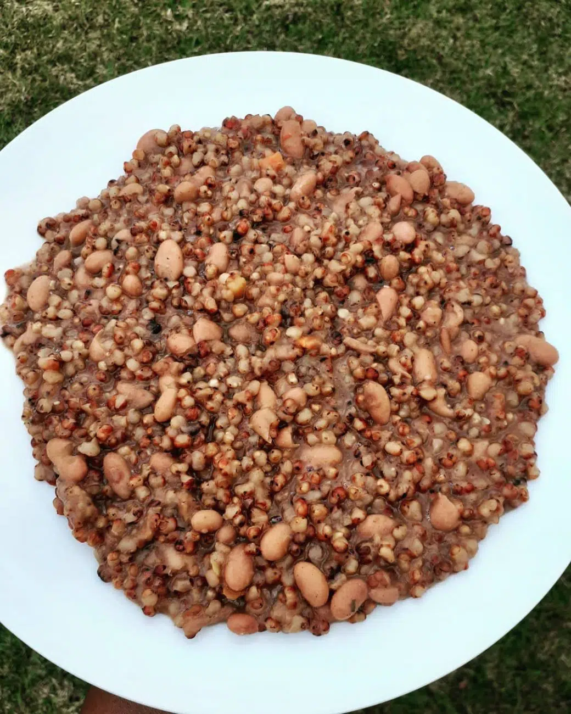
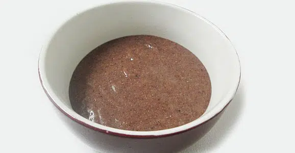
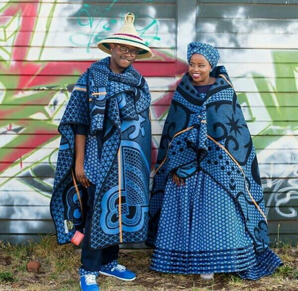
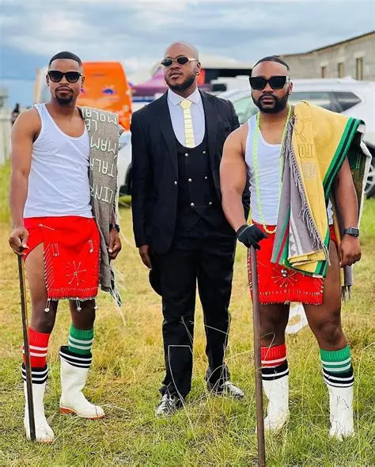
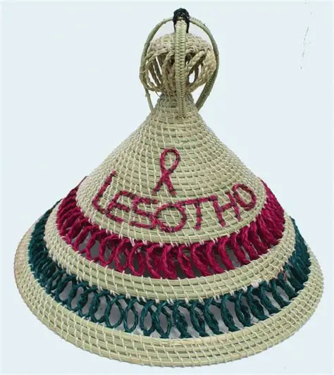
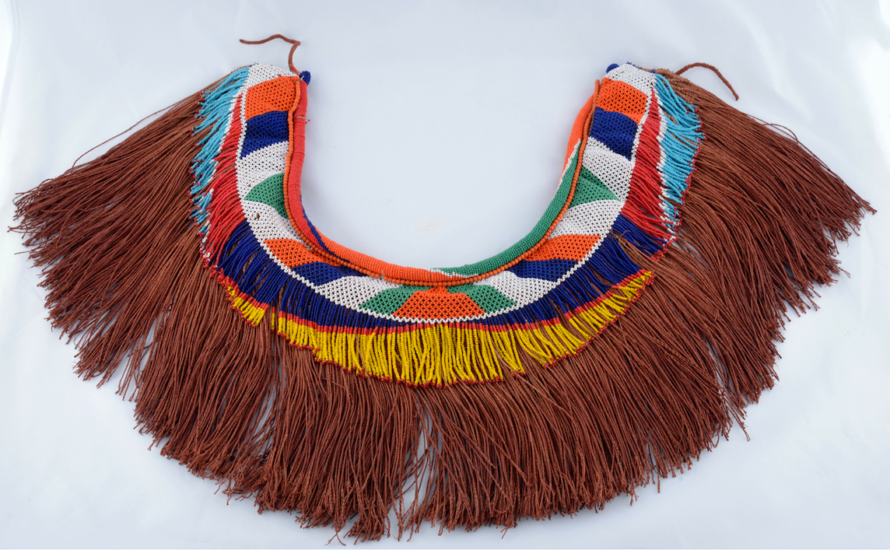
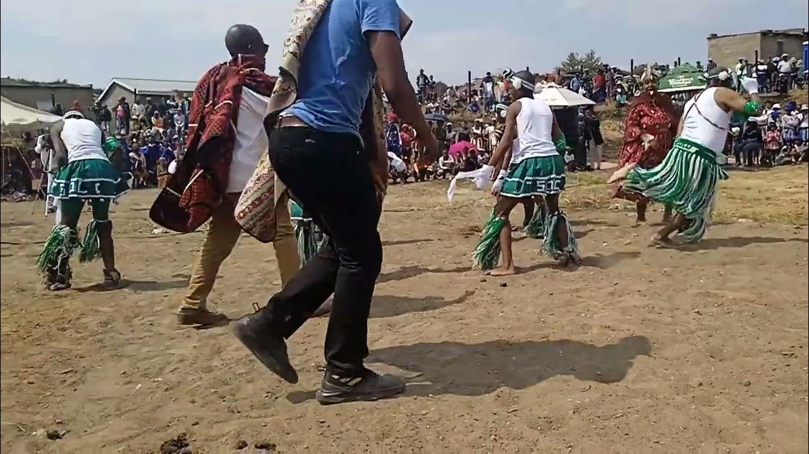
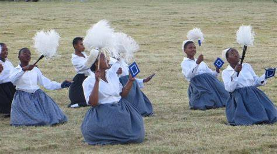

Basotho Cuisine




Lesotho’s cuisine reflects agricultural traditions and cultural identity through staple foods like papa and moroho. Meals are prepared using traditional methods and local ingredients. Culinary tourism allows visitors to experience authentic Basotho life. Food preparation promotes cultural exchange and learning. Rural communities benefit economically from tourism. The cuisine aligns with sustainable food trends. It enriches the tourism experience (Government of Lesotho, 2021).Traditional Basotho food includes papa (maize meal), moroho (greens), and nyama (meat). Meals are simple but nourishing, reflecting rural lifestyles.
Clothing




The iconic Basotho blanket is worn as a symbol of identity and warmth. Traditional hats called 'mokorotlo' are also culturally significant. The Seanamarena Blankets is not just clothing; it's identity, status, and protection against mountain cold. Each pattern has meaning: the poone design is for prosperity, kharetsa for royalty, and Lehlanya for initiates. Men wear it over one shoulder, belted at the waist, with a mokorotlo hat made from woven grass. Children get their fisrt Blanket at birth and are buried in one at death. You can buy authentic blankets at Basotho hat in Maseru
Dances


Basotho dances are energetic and rhythmic, often performed during celebrations and ceremonies with traditional music. Basotho Dance is a storytelling with the whole body,and you will hear it before you see it. famo is the most famous, dance, danced by men in the blankets with accordians and drums driving the bea. Dancers stomp, shout praise poetry called "lifela", and challenges each otherin fastwork battles. Women perform mokhibo, a kneeling dance with rhythmic shoulder shrugs and clapping that tell stories of dealy life. Mohobelo is danced by men in groups with high kicks and synchronized steps that shake the ground.
Poems
Music plays a vital role in Basotho culture, with songs telling stories of history, daily life, and social values.Traditional music, dance, and poetry play a central role in Basotho culture and tourism. Performances reflect history, identity, and social values. Dance forms and storytelling preserve traditions. Tourists experience immersive cultural interactions. Local artists benefit economically. Cultural preservation is supported through tourism. These elements enhance visitor engagement (Ashworth, 2019).